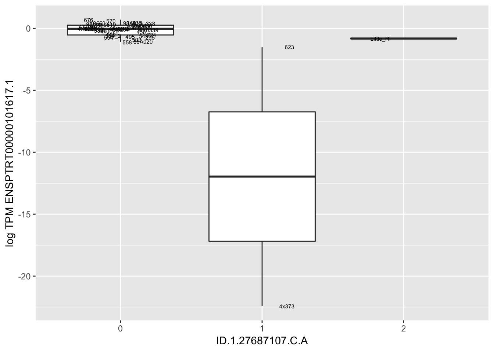

20190424_Check_eQTLs
Last updated: 2019-04-25
Checks: 6 0
Knit directory: Comparative_eQTL/analysis/
This reproducible R Markdown analysis was created with workflowr (version 1.2.0). The Report tab describes the reproducibility checks that were applied when the results were created. The Past versions tab lists the development history.
Great! Since the R Markdown file has been committed to the Git repository, you know the exact version of the code that produced these results.
Great job! The global environment was empty. Objects defined in the global environment can affect the analysis in your R Markdown file in unknown ways. For reproduciblity it’s best to always run the code in an empty environment.
The command set.seed(20190319) was run prior to running the code in the R Markdown file. Setting a seed ensures that any results that rely on randomness, e.g. subsampling or permutations, are reproducible.
Great job! Recording the operating system, R version, and package versions is critical for reproducibility.
Nice! There were no cached chunks for this analysis, so you can be confident that you successfully produced the results during this run.
Great! You are using Git for version control. Tracking code development and connecting the code version to the results is critical for reproducibility. The version displayed above was the version of the Git repository at the time these results were generated.
Note that you need to be careful to ensure that all relevant files for the analysis have been committed to Git prior to generating the results (you can use wflow_publish or wflow_git_commit). workflowr only checks the R Markdown file, but you know if there are other scripts or data files that it depends on. Below is the status of the Git repository when the results were generated:
Ignored files:
Ignored: .DS_Store
Ignored: .Rhistory
Ignored: .Rproj.user/
Untracked files:
Untracked: analysis/20190327_MakeCovariateFiles.Rmd
Untracked: analysis/20190421_RegressOutRNASeqPCs.Rmd
Untracked: analysis_temp/
Untracked: docs/figure/20190412_Check_eQTLs.Rmd/
Untracked: docs/figure/20190421_RegressOutRNASeqPCs.Rmd/
Untracked: docs/figure/20190424_Check_eQTLs.Rmd/
Unstaged changes:
Deleted: analysis/20190412_Check-Kinship-Matrices.Rmd
Modified: analysis/20190412_Check_eQTLs.Rmd
Modified: analysis/index.Rmd
Note that any generated files, e.g. HTML, png, CSS, etc., are not included in this status report because it is ok for generated content to have uncommitted changes.
These are the previous versions of the R Markdown and HTML files. If you’ve configured a remote Git repository (see ?wflow_git_remote), click on the hyperlinks in the table below to view them.
| File | Version | Author | Date | Message |
|---|---|---|---|---|
| Rmd | 85def50 | Benjmain Fair | 2019-04-25 | added analysis of 20190424 eqtl model |
library(tidyverse)
library(knitr)
library(data.table)My second pass at eqtl mapping was as follows: Genotypes filtered for MAF>0.5 & GenotypingRate>0.9, HWE-pvalue<10e-7.5. ~9.5M variants passed these filter. Gene expression as log(TPM), filtering for genes with >0 TPM in all samples (~17,500 genes passed this filter). Sample MD_And was dropped from analysis because it was previously shown to be an outlier that caused spurious associations. Association testing used the following linear mixed model for each cis-variant-gene-pair (cis definied as <1Mb from gene):
\[ Y =Wα+xβ+u+ε \]
where \(Y\) is gene expression as \(log(TPM)\), \(W\) covariates include first three genotype principal components (to account for population structure) as well as 3 RNA-seq PCs, Sex, an interceptm and 5 genotype PCs (PCs 1-3 visually segregate admixture and large population structure while PCs4-5 take into account some closely related samples). \(x\) is coded as 0,1,2, \(U \sim MVN(0,\sigma^2 K)\) where \(K\) an identity matrix (therefore this is not really and lmm). I choose this model after coworkers suggested to not mix lmm (with kinship matrix) with genotype PCs because it is sort of odd to justify or unelegent. Dealing with both close relatedness and distant population structure in gwas models is an area of ongoing research. Some helpful links: https://www.biorxiv.org/content/biorxiv/early/2018/09/07/409953.full.pdf https://www.nature.com/articles/srep06874
I think in the future I will still refine this model, specifically to include both kinship matrix (lmm) as well as first 3 genotype PCs since the kinship matrix produced by KING or GEMMA clearly does not capture the population structure that is captured in the first 3 PCs that is also reflected in Admixture analysis.
Association testing was implemented in the R package ‘MatrixEQTL’. This resulted in ~5000 eSNP-gene pairs at FDR<0.1 (Benjamini Hodgeberg correction).
Here I want to check that the results of this analysis are reasonable, starting by checking boxplots of gene expression stratified by genotype for a handful of significant eSNP-gene pairs. Based on a previous analysis of phenotypes after regressing out the first 3 RNA-seq PCs (same as what were included in this model) results in sample 317 being an outlier. Here I want to check if this sample is now driving a lot of spurious associations.
# Read in genotypes for eQTLs
Genotypes <- read.table("../data/20140424_sig_genotypes.raw", header=T, check.names = F, stringsAsFactors = F)
colnames(Genotypes) <- sub("_.*", "", colnames(Genotypes))
# Genotypes[!duplicated(as.list(Genotypes))]
kable(Genotypes[1:10,1:10])| FID | IID | PAT | MAT | SEX | PHENOTYPE | ID.1.5224000.G.GA | ID.1.8143280.T.C | ID.1.9333752.CT.C | ID.1.14914517.C.T |
|---|---|---|---|---|---|---|---|---|---|
| 295 | Pan_troglodytes_ThisStudy | 0 | 0 | 0 | -0.502512 | 0 | 0 | 0 | 0 |
| 317 | Pan_troglodytes_ThisStudy | 0 | 0 | 0 | -0.933389 | 0 | 0 | NA | 0 |
| 338 | Pan_troglodytes_ThisStudy | 0 | 0 | 0 | -1.082890 | 0 | 0 | 0 | 0 |
| 389 | Pan_troglodytes_ThisStudy | 0 | 0 | 0 | -0.779304 | 0 | 0 | 0 | 0 |
| 438 | Pan_troglodytes_ThisStudy | 0 | 0 | 0 | -0.871399 | 0 | 0 | 0 | 0 |
| 456 | Pan_troglodytes_ThisStudy | 0 | 0 | 0 | -0.515976 | 0 | 0 | 0 | 0 |
| 462 | Pan_troglodytes_ThisStudy | 0 | 0 | 0 | -0.674267 | 0 | 0 | 0 | 1 |
| 476 | Pan_troglodytes_ThisStudy | 0 | 0 | 0 | -1.087490 | 0 | 0 | 0 | 0 |
| 495 | Pan_troglodytes_ThisStudy | 0 | 0 | 0 | 0.220741 | 0 | 0 | 0 | 0 |
| 4x0025 | Pan_troglodytes_ThisStudy | 0 | 0 | 0 | -0.796774 | 0 | 0 | 0 | 0 |
#Make sure there aren't duplicate columns
length(colnames(Genotypes))[1] 4699length(unique(colnames(Genotypes)))[1] 4699# Read in eQTLs from MatrixEQTL output (already filtered for FDR<0.1)
eQTLs <- read.table("../data/20140424_sig_eqtls.txt", header=T)
kable(head(eQTLs))| SNP | gene | beta | t.stat | p.value | FDR |
|---|---|---|---|---|---|
| ID.15.23454749.C.CA | ENSPTRT00000076477.1 | -8.565152 | -22.15402 | 0 | 0e+00 |
| ID.1.27687107.C.A | ENSPTRT00000101617.1 | -21.379013 | -18.96348 | 0 | 0e+00 |
| ID.19.47916617.CA.C | ENSPTRT00000026036.6 | -18.431096 | -15.20789 | 0 | 3e-07 |
| ID.19.48286021.T.C | ENSPTRT00000026036.6 | -18.431096 | -15.20789 | 0 | 3e-07 |
| ID.1.52667085.T.C | ENSPTRT00000078626.1 | -16.180423 | -14.76557 | 0 | 4e-07 |
| ID.11.83128602.C.A | ENSPTRT00000090801.1 | -8.839727 | -13.08139 | 0 | 6e-07 |
# Read in phenotypes, from count table
CountTable <- read.table('../output/ForAssociationTesting.phenotypes.txt', header=T, check.names=FALSE, row.names = 1) %>%
t() %>%
as.data.frame() %>%
rownames_to_column(var = "FID")
kable(CountTable[1:10, 1:10])| FID | ENSPTRT00000080965.1 | ENSPTRT00000018164.6 | ENSPTRT00000035805.5 | ENSPTRT00000022320.6 | ENSPTRT00000100908.1 | ENSPTRT00000077951.1 | ENSPTRT00000097135.1 | ENSPTRT00000048245.4 | ENSPTRT00000078626.1 |
|---|---|---|---|---|---|---|---|---|---|
| 295 | -0.5513734 | 2.275439 | 1.3432720 | 1.3718810 | 1.4421358 | -1.0543007 | 0.8360000 | 0.2808538 | -0.0680230 |
| 317 | -0.2319409 | 2.370347 | 2.4229426 | 1.2747034 | 2.0734008 | -0.7363178 | 1.5546078 | 0.4831358 | -0.9324049 |
| 338 | -0.3714275 | 1.969537 | 1.6078026 | 1.1767917 | 0.8252932 | -1.1656307 | 0.9588213 | 0.6249915 | 0.4036368 |
| 389 | -0.2293842 | 2.249502 | 1.2802308 | 1.0743333 | 1.0169213 | -1.0718136 | 0.4107843 | 0.3755693 | 0.0154599 |
| 438 | -0.2919820 | 1.917884 | 1.2494890 | 0.9092581 | 1.4859383 | -0.9321051 | 0.0114937 | -0.0845399 | -1.4974181 |
| 456 | -0.5319812 | 1.758358 | 1.1620940 | 1.2058840 | 0.8487611 | -1.1157300 | 0.3181337 | 0.1775519 | 0.1434075 |
| 462 | -0.4041485 | 2.181032 | 2.4286273 | 1.7636154 | 0.8566172 | -1.4709289 | 0.6489758 | 0.4397635 | -0.2053417 |
| 476 | -0.4501398 | 2.356609 | 1.6570788 | 1.3177987 | 1.3527169 | -1.1321205 | 0.5369669 | 0.3009191 | 0.0087219 |
| 495 | 0.2158047 | 1.354796 | 0.8498175 | 1.3897160 | 1.3148950 | -1.7666708 | 2.4398221 | -0.1638799 | -0.7630440 |
| 4x0025 | 0.6260347 | 2.326077 | 3.1629317 | 2.0859516 | 1.1739238 | -0.1907550 | 1.8670710 | 0.7735652 | 0.5801744 |
MergedData <- left_join(Genotypes, CountTable, by="FID")#eqtls, ordered from most significant at top
kable(head(eQTLs))| SNP | gene | beta | t.stat | p.value | FDR |
|---|---|---|---|---|---|
| ID.15.23454749.C.CA | ENSPTRT00000076477.1 | -8.565152 | -22.15402 | 0 | 0e+00 |
| ID.1.27687107.C.A | ENSPTRT00000101617.1 | -21.379013 | -18.96348 | 0 | 0e+00 |
| ID.19.47916617.CA.C | ENSPTRT00000026036.6 | -18.431096 | -15.20789 | 0 | 3e-07 |
| ID.19.48286021.T.C | ENSPTRT00000026036.6 | -18.431096 | -15.20789 | 0 | 3e-07 |
| ID.1.52667085.T.C | ENSPTRT00000078626.1 | -16.180423 | -14.76557 | 0 | 4e-07 |
| ID.11.83128602.C.A | ENSPTRT00000090801.1 | -8.839727 | -13.08139 | 0 | 6e-07 |
# 5235 eQTLs at FDR<0.1
dim(eQTLs)[1] 5235 6# betas for these
hist(eQTLs$beta)
# Expression box plot, stratified by genotype. For a fe of top of the list snp-gene pairs (most significant)
MyBoxplot <- function(DataFrame, Labels.name, SNP.name, Gene.name){
data.frame(Genotype = DataFrame[[SNP.name]],
Phenotype = DataFrame[[Gene.name]],
FID=DataFrame[[Labels.name]]) %>%
ggplot(aes(x=factor(Genotype), y=Phenotype, label=FID)) +
geom_boxplot(outlier.shape = NA) +
geom_text(position=position_jitter(width=0.25), alpha=1, size=2) +
scale_y_continuous(name=paste("log TPM", Gene.name)) +
xlab(SNP.name)
}
MyBoxplot(MergedData, "FID", "ID.15.23454749.C.CA", "ENSPTRT00000076477.1")MyBoxplot(MergedData, "FID", "ID.1.27687107.C.A", "ENSPTRT00000101617.1")
MyBoxplot(MergedData, "FID", "ID.19.47916617.CA.C", "ENSPTRT00000026036.6")Interpretation: This is concerning; these top hits seem to be all false positives, probably driven by genotyping errors as evidenced by a huge excess of heterozygotes. I checked the raw DNA-sequencing at some of these loci (not shown) and there doesn’t seem to be anything obviously wrong with the alignment or variant calling (~50% of non-duplicate, reads without any excess of mismatches and no strand bias indicate a mismatch/true snp at these locations). Paralogous genes can cause mismapping and false positive variant calls at positions like this. Probably the best way to filter them out will be to apply a Hardy-weinberg filter. This positions will deviate from HWE with very extreme Pvals, so applying a very stringent HWE filter (that still allows for some deviation from HWE, as expected because of population substructure and related individuals) may get rid of these problematic genotypes.
Let’s check some randomly sampled eqtls to see if all of the eqtls are like this.
set.seed(1)
RandomSampleOfEqtls <- eQTLs %>% sample_n(20) %>% select(SNP, gene, beta)
kable(RandomSampleOfEqtls)| SNP | gene | beta |
|---|---|---|
| ID.3.12875309.G.A | ENSPTRT00000100258.1 | -1.2579149 |
| ID.19.36150204.A.G | ENSPTRT00000020015.5 | -0.5465476 |
| ID.1.135652474.G.T | ENSPTRT00000002693.4 | -0.7527377 |
| ID.21.31778015.A.C | ENSPTRT00000104060.1 | -0.7322155 |
| ID.18.54473490.C.T | ENSPTRT00000083261.1 | -2.0248226 |
| ID.5.64025208.G.A | ENSPTRT00000031272.5 | 3.4724192 |
| ID.3.13117001.T.C | ENSPTRT00000100258.1 | -1.2711042 |
| ID.5.92225009.C.A | ENSPTRT00000072594.2 | 17.3522156 |
| ID.20.38410400.A.G | ENSPTRT00000087197.1 | -16.0591514 |
| ID.6.30823944.G.A | ENSPTRT00000033063.6 | -5.8439815 |
| ID.11.83087291.C.T | ENSPTRT00000090801.1 | -7.3958997 |
| ID.1.16827581.G.A | ENSPTRT00000097233.1 | -13.5107443 |
| ID.7.112570654.A.G | ENSPTRT00000092435.1 | -1.1046965 |
| ID.2A.28624221.C.T | ENSPTRT00000021901.5 | -0.7824445 |
| ID.1.122576687.C.T | ENSPTRT00000087762.1 | 11.2478985 |
| ID.6.28998888.G.A | ENSPTRT00000033063.6 | -2.8801693 |
| ID.20.38367533.C.CTGGG | ENSPTRT00000087197.1 | -15.9185949 |
| ID.7.112560520.G.A | ENSPTRT00000036264.4 | -1.9609994 |
| ID.4.55937461.A.C | ENSPTRT00000111273.1 | 7.2433656 |
| ID.1.123117714.A.G | ENSPTRT00000087762.1 | 11.2478985 |
for(i in 1:nrow(RandomSampleOfEqtls)) {
try(
print(MyBoxplot(MergedData, "FID", as.character(RandomSampleOfEqtls$SNP[i]), as.character(RandomSampleOfEqtls$gene[i])))
)
}Error in data.frame(Genotype = DataFrame[[SNP.name]], Phenotype = DataFrame[[Gene.name]], :
arguments imply differing number of rows: 0, 38
Error in data.frame(Genotype = DataFrame[[SNP.name]], Phenotype = DataFrame[[Gene.name]], :
arguments imply differing number of rows: 0, 38Error in data.frame(Genotype = DataFrame[[SNP.name]], Phenotype = DataFrame[[Gene.name]], :
arguments imply differing number of rows: 0, 38
sessionInfo()R version 3.5.1 (2018-07-02)
Platform: x86_64-apple-darwin15.6.0 (64-bit)
Running under: macOS 10.14
Matrix products: default
BLAS: /Library/Frameworks/R.framework/Versions/3.5/Resources/lib/libRblas.0.dylib
LAPACK: /Library/Frameworks/R.framework/Versions/3.5/Resources/lib/libRlapack.dylib
locale:
[1] en_US.UTF-8/en_US.UTF-8/en_US.UTF-8/C/en_US.UTF-8/en_US.UTF-8
attached base packages:
[1] stats graphics grDevices utils datasets methods base
other attached packages:
[1] data.table_1.12.0 knitr_1.22 forcats_0.4.0
[4] stringr_1.4.0 dplyr_0.8.0.1 purrr_0.3.2
[7] readr_1.3.1 tidyr_0.8.2 tibble_2.1.1
[10] ggplot2_3.1.0 tidyverse_1.2.1
loaded via a namespace (and not attached):
[1] Rcpp_1.0.1 highr_0.8 cellranger_1.1.0 plyr_1.8.4
[5] pillar_1.3.1 compiler_3.5.1 git2r_0.24.0 workflowr_1.2.0
[9] tools_3.5.1 digest_0.6.18 lubridate_1.7.4 jsonlite_1.6
[13] evaluate_0.13 nlme_3.1-137 gtable_0.3.0 lattice_0.20-38
[17] pkgconfig_2.0.2 rlang_0.3.3 cli_1.1.0 rstudioapi_0.10
[21] yaml_2.2.0 haven_2.1.0 xfun_0.6 withr_2.1.2
[25] xml2_1.2.0 httr_1.4.0 hms_0.4.2 generics_0.0.2
[29] fs_1.2.6 rprojroot_1.3-2 grid_3.5.1 tidyselect_0.2.5
[33] glue_1.3.1 R6_2.4.0 readxl_1.1.0 rmarkdown_1.11
[37] modelr_0.1.4 magrittr_1.5 whisker_0.3-2 backports_1.1.3
[41] scales_1.0.0 htmltools_0.3.6 rvest_0.3.2 assertthat_0.2.1
[45] colorspace_1.4-1 labeling_0.3 stringi_1.4.3 lazyeval_0.2.2
[49] munsell_0.5.0 broom_0.5.1 crayon_1.3.4